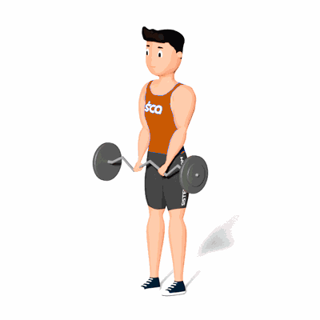

Rosca Inversa com Barra W

Exercício para fortalecimento e hipertrofia dos bíceps e antebraço, com enfoque aos músculos bíceps braquiais.
Ficha Técnica
Tipo: Musculação
Grupo Muscular: Bíceps
Aparelho: Nenhum
Músculos: Nenhum
Como realizar
- De pé, segurar a barra W com as mãos com a pegada pronada;
- Flexionar o cotovelo de maneira controlada até contrair ao máximo o bíceps;
- Manter os punhos neutros e os cotovelos apoiados na lateral do tronco. Os ombros devem permanecer imóveis durante o exercício;
- Retornar lentamente à posição inicial, estendendo os cotovelos.
 RC STORE
RC STORE